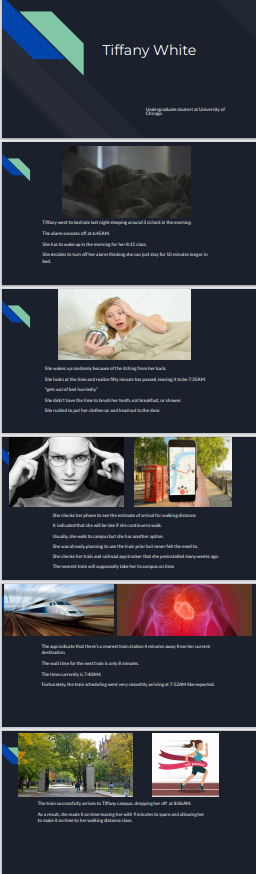
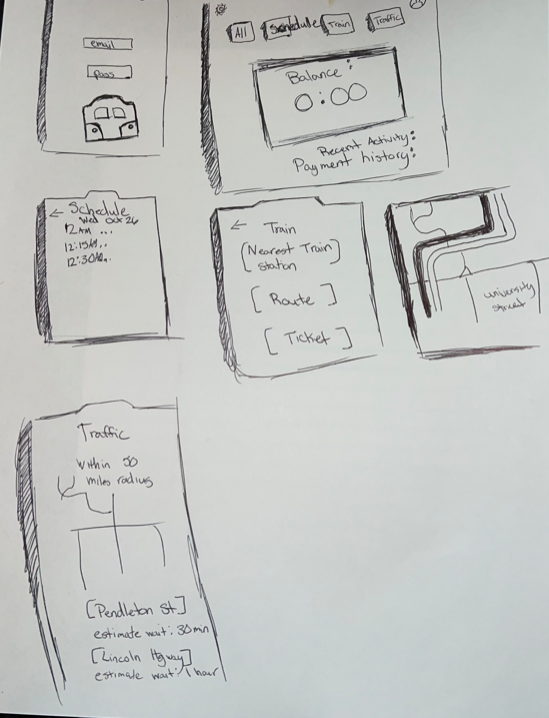
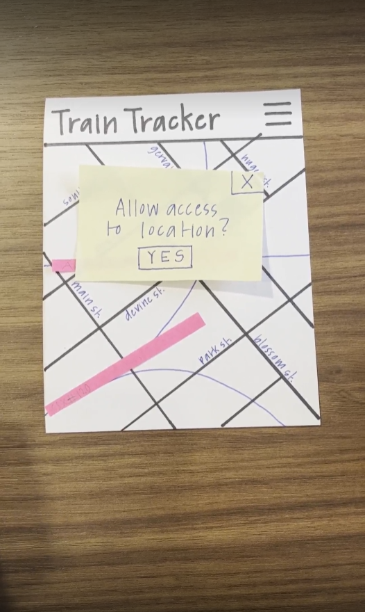
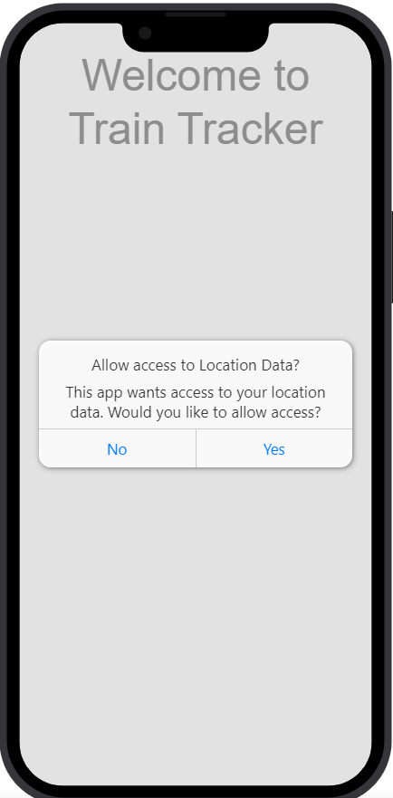

Problem Statement: Trains and Traffic

Everyone who lives in Columbia or any city with major train lines running through it knows the pain of waiting for a slow train and showing up to your destination 20 minutes late. The problem is not knowing the train schedules throughout Columbia and being late because of them. The problem is more specifically not knowing the optimal route to get to your destination while taking train delays into consideration.
Affinity Diagram: Trains and Traffic

My team and I came together as a unit, brainstormed all the necessities, functions, and concerns regarding to the Trains and Traffic.
Personna: 7 Personnas for Trains and Traffic App

A personna of a typical Trains and Traffic app user.
Storyboard: 7 Storyboard for Trains and Traffic App
A storyboard of different scenarios that a user might encounter.
Sketches: 7 Sketches for the train app
Rough ideas of how the application may look.
Paper prototype
A paper walkthrough of the potential look of every screen in the application.
High-fi Prototype:Train Tracker App
A walkthrough of the potential look of every screen in the application.